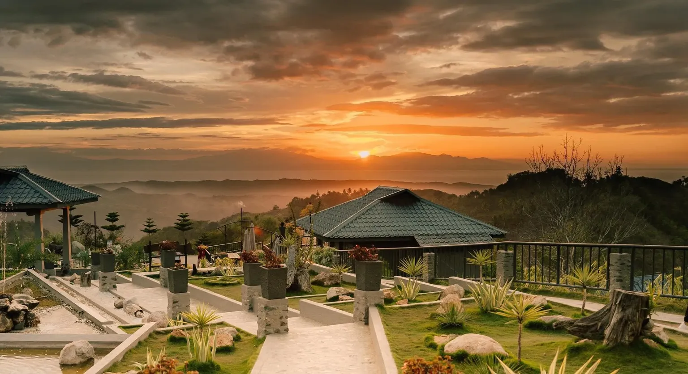
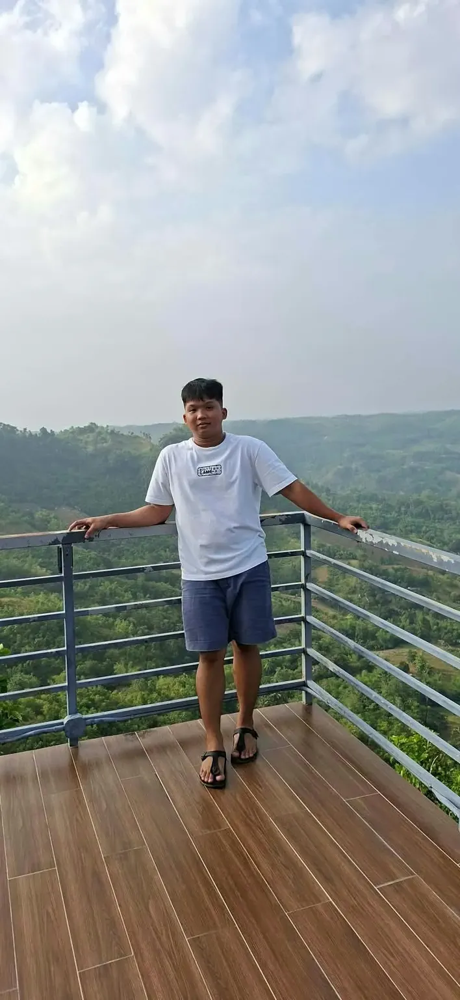
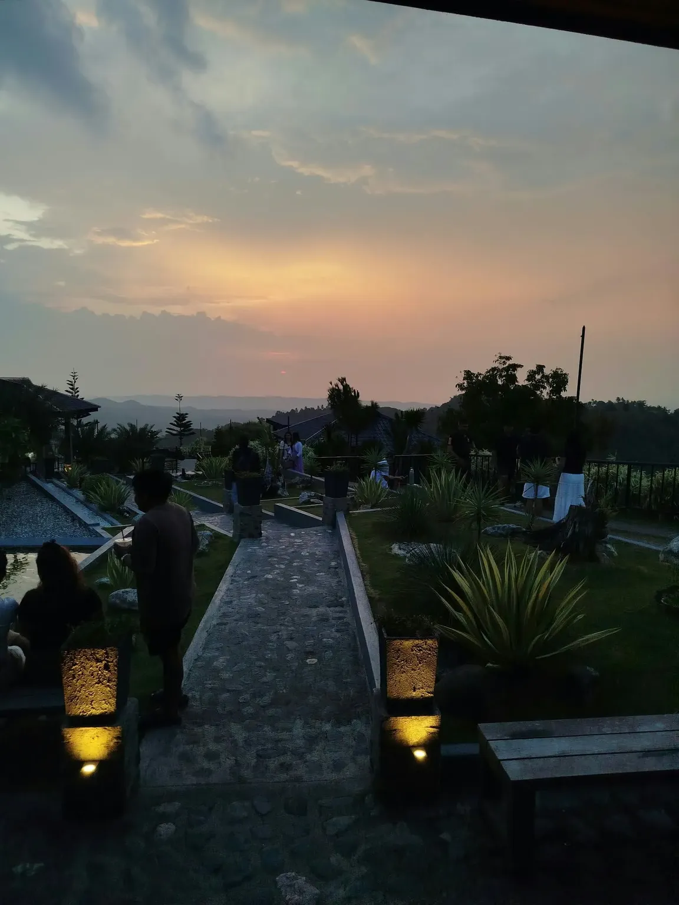
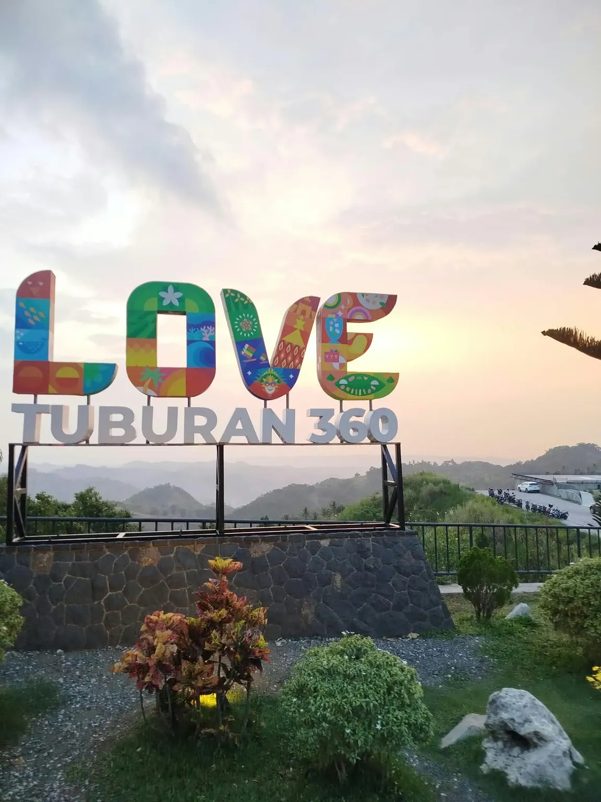
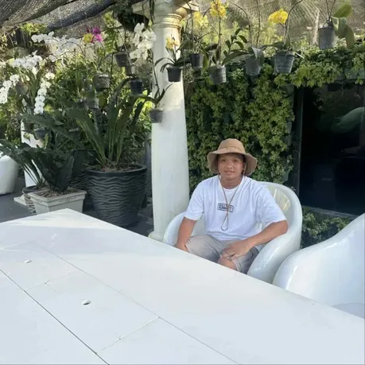
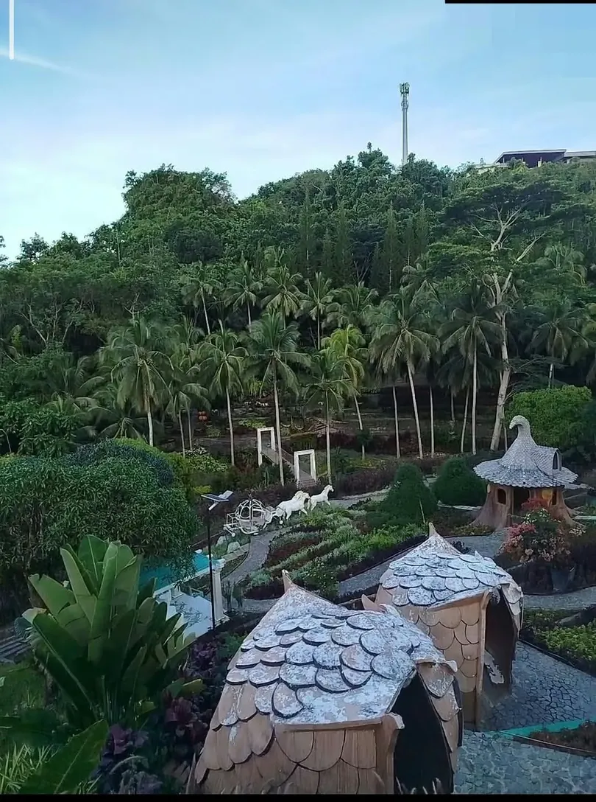
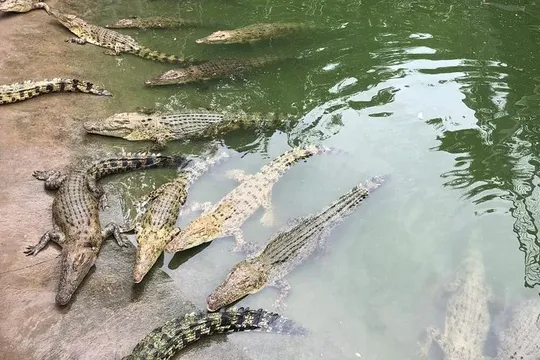
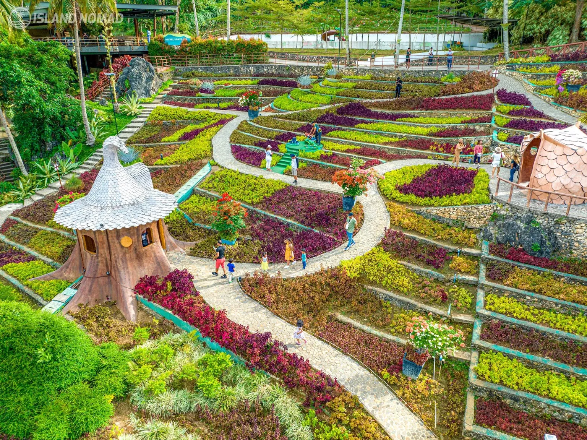

Welcome to James' Travel Blog!
Take a look at my adventures! This page features the places I have visited, the sights I have seen, and the experiences I have enjoyed along the way. Each destination gives me something new to discover and appreciate. Come along as I share my trips through photos and stories. I hope you enjoy seeing Cebu through my experiences!
TUBURAN 360

Visiting Tuburan 360 in Tuburan, Cebu, was a wonderful experience. Located in the mountains, the place offers beautiful views of the surrounding landscapes, fresh air, and a peaceful atmosphere. It was a great place to relax, enjoy nature, and take a break from the usual busy surroundings. I enjoyed exploring the area, taking pictures, and spending quality time with my family and friends. The beautiful scenery made the visit even more memorable, especially with the mountains stretching across the horizon.

Enjoying the Mountain Views
One of the things I enjoyed most about Tuburan 360 was the breathtaking view of the mountains. Standing by the railing and looking at the surrounding landscape gave me a chance to appreciate the beauty of nature. The cool breeze and peaceful environment also made the experience more relaxing.

A Beautiful Mountain Sunset
Another highlight of the visit was seeing the sunset over the mountains. The changing colors of the sky created a beautiful view that was worth capturing. It was a peaceful moment that made me appreciate the simple things, such as spending time outdoors and enjoying the scenery around me.

Love Tuburan 360
The Love Tuburan 360 banner was another memorable sight during the trip. With the mountains in the background, it made a great spot for taking pictures and remembering the visit. It also represents the beauty and charm of Tuburan as a destination worth exploring.
Final Thoughts
Overall, my visit to Tuburan 360 was a memorable experience. I enjoyed the beautiful mountain views, the relaxing atmosphere, and the chance to spend time with family and friends. The friendly staff and convenient experience made the trip even better. It reminded me that traveling does not always have to involve going far or visiting famous places. Sometimes, simply discovering beautiful spots nearby can make an experience worthwhile.
CEBU SAFARI AND ADVENTURE PARK
Visiting Cebu Safari and Adventure Park in Carmen, Cebu, was a fun and memorable experience. The park is surrounded by beautiful natural landscapes, colorful flowers, and refreshing greenery. Its peaceful atmosphere made it a great place to relax, take pictures, and enjoy the beauty of nature. Exploring the park was a nice way to take a break from my daily routine. I enjoyed the surroundings, appreciated the scenery, and had the opportunity to create wonderful memories during the visit.

A Relaxing Stop at the Cafe
During the visit, I also had time to relax at one of the cafes inside the park. Sitting back and enjoying the surroundings was a nice way to take a break from exploring. It was also a good opportunity to take pictures and enjoy the peaceful atmosphere of the place.

A View from Above
One of the impressive things about the park is its vast landscape. From above, the different areas of the property can be seen surrounded by mountains and greenery. The wide open spaces and natural surroundings show just how much there is to explore within the park.

Exploring the Wildlife
Cebu Safari is also known for its variety of animals, including lions, tigers, giraffes, zebras, and different species of birds. The park provides visitors with an opportunity to see wildlife and learn more about different animals. It is one of the attractions that makes the destination interesting for visitors of all ages.

Beautiful Gardens and Natural Surroundings
Aside from its wildlife attractions, the park also features beautiful gardens filled with different plants and flowers. Michel's Garden and Gardens of the World are among the places where visitors can appreciate the variety of greenery and enjoy a more relaxing walk. These areas add to the natural beauty of the park.
Final Thoughts
Overall, my visit to Cebu Safari and Adventure Park was an enjoyable experience. I appreciated the beautiful surroundings, relaxing atmosphere, and the opportunity to explore a different place away from the busy city. It was a wonderful way to spend time, take pictures, and enjoy the simple joys of traveling. It is definitely a destination worth visiting for anyone who wants to experience nature and wildlife in Cebu.